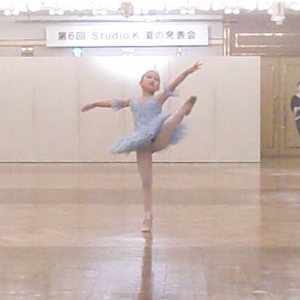
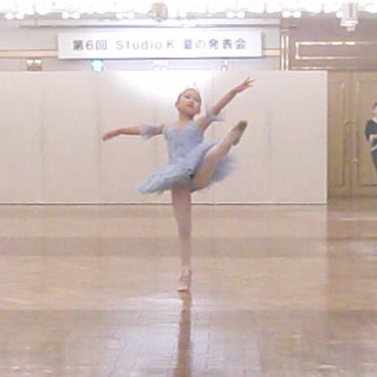
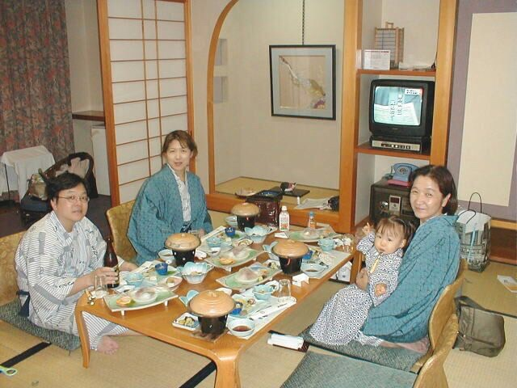
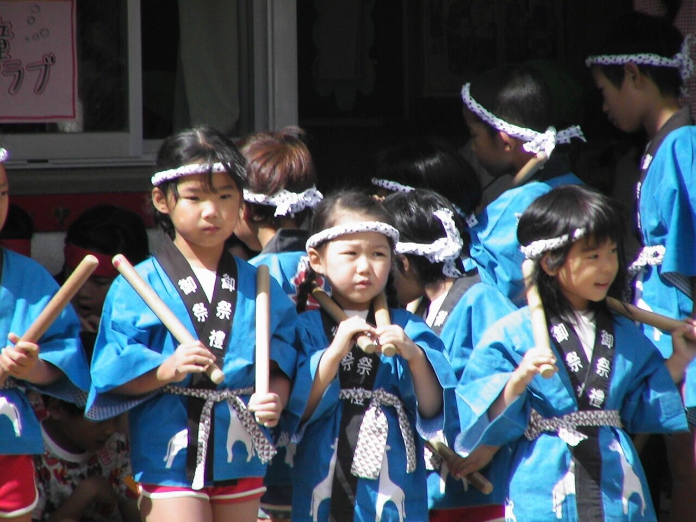

Life in Japan
I was born in a concrete jungle in Osaka, Japan. As an only child, my mother brought me up teaching me a variety of lessons. Ever since I was little, I immersed myself in arts: ballet from age 3 and piano from age 5. Ballet was, and is, my life. I went to lessons 6 times a week, performed in two recitals every year, and danced two different variations. Piano was more of a hobby to me, but I learned to play a waltz by Chopin, which became my ultimate favorite and a special piece of my life. I would also play duets with my mom, which remains one of my best memories.
My mom introduced me to western music, especially songs from the '80s and musicals. I would sing them in car rides not knowing the meanings of the lyrics. At 7 years old, I was obsessed with West Side Story.
 


While my mother taught me arts, my father read to me and taught me academics, especially math. I grew up loving math and science. We would all go to a science museum with a planetarium, or take a road trip to stargaze and name the stars or to observe a solar eclipse. By second grade, I was able to solve middle school level math and calculate large numbers in my head quickly. In 4th grade, I placed first in a countrywide academic test in Japan.
-
(hover over!)
-  My family and I at a vacation
-
 Classroom in Japan (spot me?)
Classroom in Japan (spot me?)
-  Japanese-style performance in kindergarten
In 2009, my dream then came true. I received a puppy for my birthday present, and we named her Marie Antoinette. She was tiny, graceful but clumsy, and often jealous, but I adored her. Because I did not have any siblings, she was my sister and my treasure.


 My mom had taught me a bit of English since I was little. Although I knew some simple vocabulary, that was not even close to survive a minute without help in the United States.
My mom had taught me a bit of English since I was little. Although I knew some simple vocabulary, that was not even close to survive a minute without help in the United States.